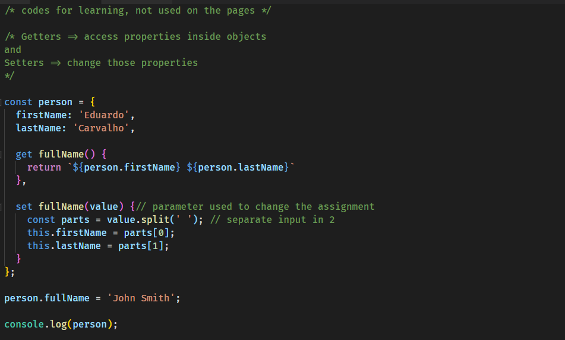
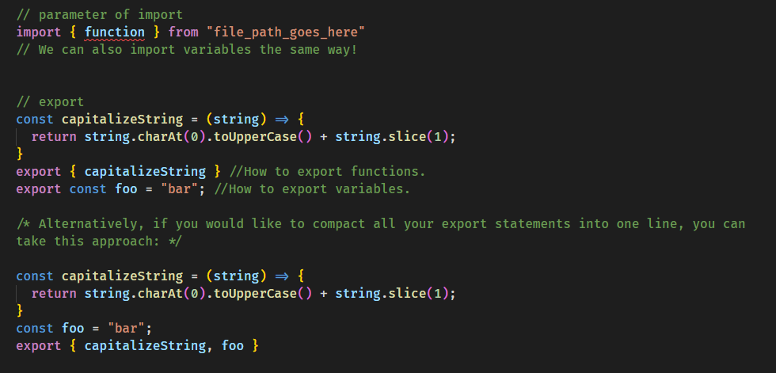
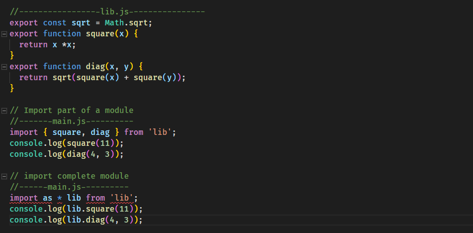

I learned about Getters and Setters for ES6 version of JavaScript at FreeCodeCamp.org.
Getters are used to access properties inside an object and make them available outside.
Setters are used to change/mutate these properties, including creating new ones based on that first property.
I watched a lesson by Mosh Hamedani on Youtube:

I also followed the lessons on required and import/export features. Require is an old way (prior ES6) to import functions and variables from modules of different files into a new one, however, it is not possible to filter what modules you import, it receives the entire file. Import, on the other hand, allows you to only import the modules you wish. To do so, you need to use export on the file you are getting the modules from. Import to note that neither import or export are available on browers, so you need to use a transpiler such as Babel to make it work.
I watched this video by Beau on FreeCodeCamp channel.

